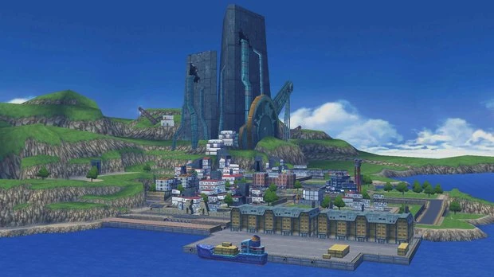
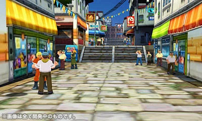
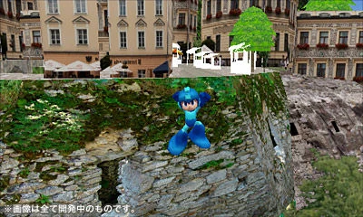

OVERVIEW
Mega Man Legends 3 was planned as the long-awaited continuation of the Mega Man Legends series.
Announced for the Nintendo 3DS, the project aimed to continue the story left unresolved in Mega Man Legends 2 while introducing updated visuals, exploration mechanics, and community-driven development features.
Despite strong fan interest and public promotion, the game was officially cancelled in 2011 before entering full production.
Trailer video of Megaman Legends 3.

Promotional screenshot
STORY
The game was intended to continue the story of Mega Man Volnutt after the ending of Mega Man Legends 2, where the protagonist remained stranded on the moon.
Players would once again explore futuristic ruins, islands, and underground environments while uncovering mysteries connected to ancient technology and lost civilizations.
Early information suggested that the game would expand the lore of the series while introducing new characters and locations.
GAMEPLAY
Mega Man Legends 3 was designed as a 3D action-adventure game combining exploration, combat, and role-playing elements.
Gameplay included:
- real-time combat
- dungeon exploration
- environmental puzzles
- customizable weapons
- open-area progression
The project also experimented with community feedback systems, allowing fans to participate in aspects of development through the “Devroom” initiative.
Prototype footage revealed gameplay that remained stylistically consistent with earlier Mega Man Legends titles while modernizing controls and camera movement.
Screen of gameplay of Megaman Legends 3.

Development image
DEVELOPMENT
Development began under Capcom as a collaboration between internal developers and the Mega Man fan community.
The game was publicly presented through development blogs, concept art, and interactive feedback initiatives where fans could vote on ideas and contribute suggestions.
A downloadable prototype titled “Mega Man Legends 3: Prototype Version” was also announced for the Nintendo 3DS eShop but never released.
As development continued, uncertainty surrounding the future of the Mega Man franchise reportedly affected the project.
CANCELLATION & LEGACY
Mega Man Legends 3 was officially cancelled in 2011.
Capcom stated that the project did not meet the necessary conditions required for continued development, though the announcement generated significant backlash from fans.
The cancellation also followed the departure of several important Capcom figures associated with the Mega Man franchise, including Keiji Inafune.
Fans organized petitions, campaigns, and preservation efforts after the announcement, turning the project into a symbol of unfinished potential within the Mega Man series.
Even years later, the game continues to be discussed as one of gaming’s most disappointing unreleased sequels.

Screen of the beta game.